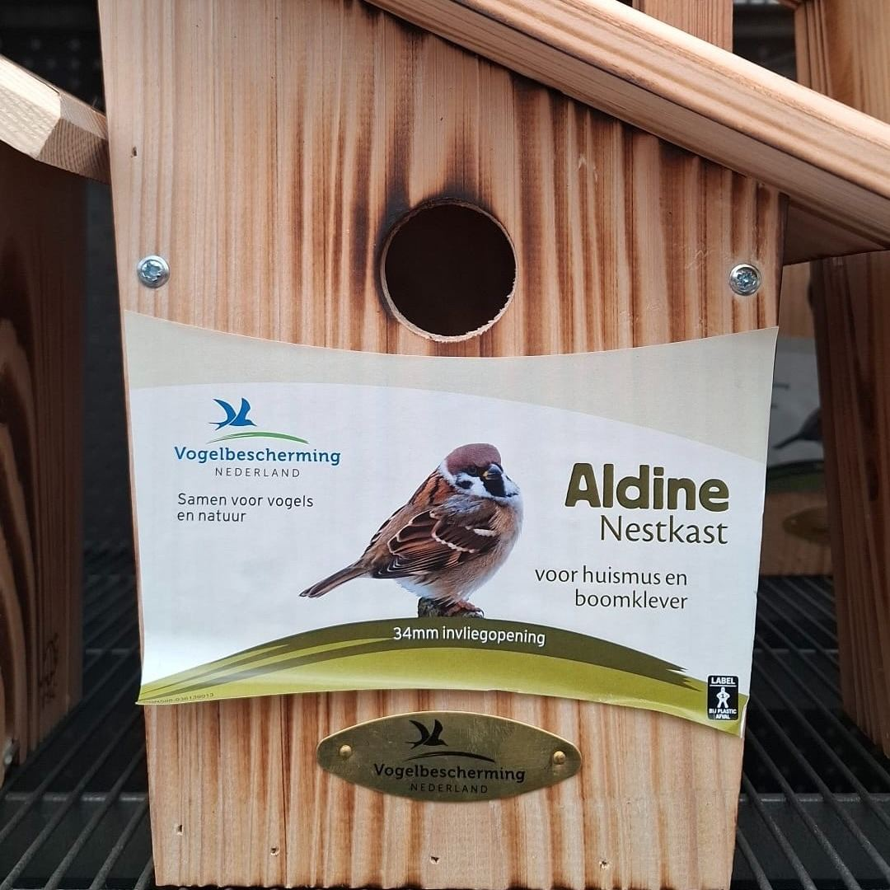

Ringmus, geen huismus
6 januari 2026 · Vogelbescherming Nederland
- Op de foto
- Ringmus
- Het ging over
- Huismus

Dat het vaak misgaat bij vogelhuisjes en voedersilo’s weten we inmiddels wel, maar dat @vogelbeschermingnederland hier zelf de mist in gaat, is toch wel pijnlijk.
We nemen aan dat we het inmiddels niet meer hoeven uit te leggen, deze fout zijn we al héél vaak tegengekomen, maar de vogel op de foto is een Ringmus, geen Huismus.
En juist bij een nestkast die expliciet bedoeld is voor Huismus en Boomklever, en waarbij een foto zo’n belangrijke rol speelt in communicatie en educatie, mag je toch wat meer soortkennis verwachten.